### Simplicity & State "Many of the classic problems of developing software products derive from this essential complexity and its nonlinear increases with size. From the complexity comes the difficulty of communication among team members, which leads to product flaws, cost overruns, schedule delays. From the complexity comes the difficulty of enumerating, much less understanding, all the possible states of the program, and from that comes the unreliability." - [Frederick P. Brooks](http://sunnyday.mit.edu/16.355/BrooksNoSilverBullet2.html) Jukka Nikki, Programmer & Mutable Object
### Mandatory joke 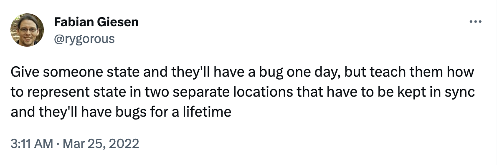
#### Design: [Simple](https://www.infoq.com/presentations/Simple-Made-Easy/) over [complex](https://www.infoworld.com/article/3639050/complexity-is-killing-software-developers.html) [.. value the items on the left more](https://agilemanifesto.org/) Manifesto for simple UI's - Widgets: [Composition](https://docs.flutter.dev/resources/inside-flutter#aggressive-composability) over Inheritance - Views: [Reactive](https://en.wikipedia.org/wiki/Reactive_programming)/[Declarative](https://docs.flutter.dev/get-started/flutter-for/declarative) over Imperative - Data flow: One-Way over Bidirectional - State Management: Distributed over centralized - State changes: Async Events over Sync methods - Domain model: Immutable over Mutable - Value types: Generated over Handwritten - Architecture: Modular/Layered over Unstructured
#### User interface is function of state [UI = f(state)](https://docs.flutter.dev/development/data-and-backend/state-mgmt/declarative) <img alt="flutter state mgmt" src="images/flutter-state-management.png" width="50%"> Developer provides a mapping from App state to UI components by implementing a Builder method. Builder method is called when the App state changes.
#### Flutter - [Hello World](https://docs.flutter.dev/get-started/flutter-for/react-native-devs) ``` import 'package:flutter/material.dart'; void main() { runApp( const Center( child: Text( 'Hello, world!', textDirection: TextDirection.ltr, ), ), ); } ``` [runApp](https://api.flutter.dev/flutter/widgets/runApp.html) takes UI as parameter. The Center [widget](https://docs.flutter.dev/development/ui/widgets-intro) becomes the root of the widget tree and has one child, the [Text](https://docs.flutter.dev/development/ui/widgets/text) widget. UI is [composed](https://docs.flutter.dev/resources/architectural-overview#composition) using [simple widgets](https://docs.flutter.dev/resources/faq#can-i-extend-and-customize-the-bundled-widgets).
#### [Simple widget tree](https://docs.flutter.dev/get-started/flutter-for/react-native-devs) 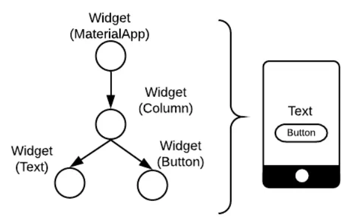 Simple widget tree which doesn't change often is easy and fast to render. Deep widget trees where there's lot of repaints and which are completely re-rendered often create performance problems.
#### [Flutter element & render trees](https://docs.flutter.dev/resources/inside-flutter) 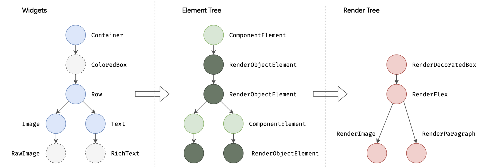 ["It would be a rare application that drew only a single widget. An important part of any UI framework is therefore the ability to efficiently lay out a hierarchy of widgets, determining the size and position of each element before they are rendered on the screen."](https://docs.flutter.dev/resources/architectural-overview#layout-and-rendering)
#### [Functional Reactive Programming (FRP)](https://quickbirdstudios.com/blog/what-is-functional-reactive-programming-frp/) 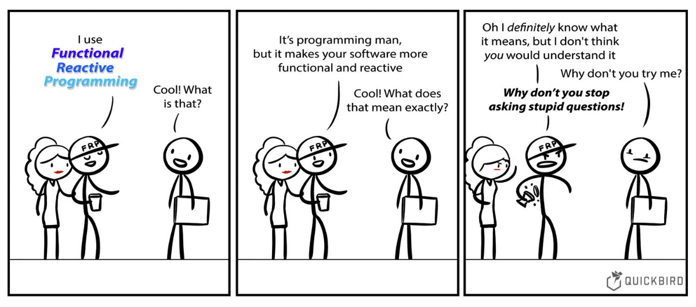 - events and state changes are uni-directional flows. - business logic is executed as event is received. - business logic may emit state changes. - ui is rendered as reaction to received state change.
#### [State management](https://docs.flutter.dev/development/data-and-backend/state-mgmt/intro) <img alt="state management" src="images/state-management-explainer.gif" width="80%"> Use [state management](https://docs.flutter.dev/development/data-and-backend/state-mgmt/intro) when you need to share application state between screens, across your app
#### [Types of State]() Ephemeral / UI / Local - associated with a particular widget - possibly contained within a single widget - no state management techniques needed App State - preserved throughout user sessions - distributed across different portions of program - may be applied globally
#### [React/Redux: Centralized state](https://www.freecodecamp.org/news/what-is-redux-store-actions-reducers-explained/) <img alt="state management" src="images/redux-store-usage-sharing-data.png" width="70%"> With Redux application state is stored in the form of a JS object tree in a single [store](https://redux.js.org/api/store). Bloc approach has [multiple Blocs](https://bloclibrary.dev/faqs/#bloc-vs-redux) and each contains part of app's state.
#### [Compare: React / Redux / Flux](https://redux.js.org/) <img alt="redux flux" src="images/redux-store-usage.png" width="50%"> Redux manages application state using events called "actions". Redux implements [Flux pattern](https://facebook.github.io/flux/docs/in-depth-overview/). Bloc library uses events to initiate state change operations. Bloc library implements bloc pattern.
#### [Bloc = Business Logic Components](https://bloclibrary.dev/#/) <img alt="bloc arch" src="images/widget-bloc-communication.png" width="60%"> Each Bloc has one input (sink, add method) and output ([stream](https://dart.dev/tutorials/language/streams)). Bloc emits (output) states and handles (input) several types of events. App state is distributed across multiple custom blocs.
#### [Compare: MVVM pattern](https://en.wikipedia.org/wiki/Model%E2%80%93view%E2%80%93viewmodel) 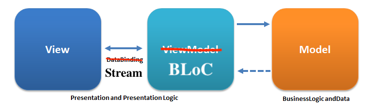 in "[MVVM (Model-View-ViewModel) .. BLoC is the replacement for ViewModel](https://medium.com/@aaron.chu/flutter-state-management-bloc-pattern-9cd6011c699)." - [VM](https://developer.android.com/topic/libraries/architecture/viewmodel)(BLoC) is responsible for managing the state - [VM](https://developer.android.com/topic/libraries/architecture/viewmodel)(BLoC) uses Model (Repository) to access data How V(UI) and [VM](https://developer.android.com/topic/libraries/architecture/viewmodel)(BLoC) communicate has changed. [Stream / One way flow](https://dart.dev/tutorials/language/streams) has replaced data binding.
#### [Compare: React / Redux One-way data flow](https://redux.js.org/tutorials/essentials/part-1-overview-concepts) 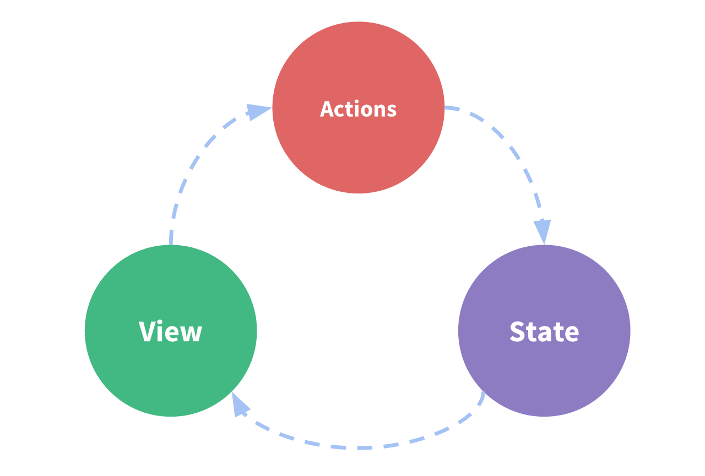 - State is condition of the app at a point in time - View is rendered based on current state - View can initiate actions - Actions update state when needed - View re-renders based on the updated state
#### [Bloc library/pattern](https://bloclibrary.dev/#/architecture) 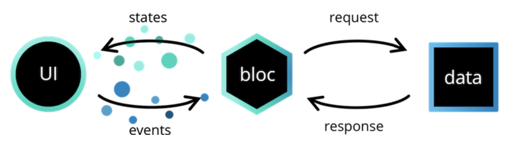 Bloc attempts to make state changes predictable by regulating when a state change can occur and enforcing a single way to change state throughout an entire application. Ui and Data layer share domain model, but do not interact directly.
#### [Bloc-to-bloc communication / layers](https://bloclibrary.dev/architecture/#bloc-to-bloc-communication) 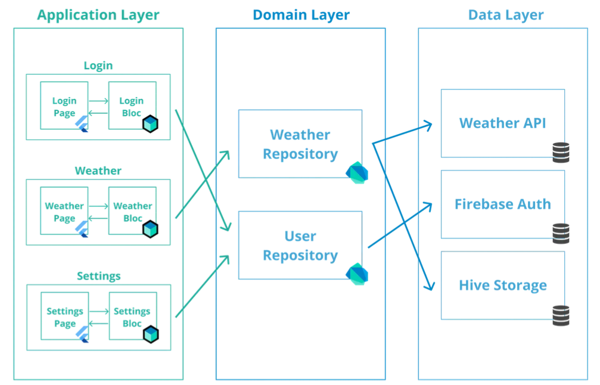 Blocs don't know each other. App may coordinate usage of blocs at presentation layer. Multiple blocks may also use same repositories to share data.
### [Bloc rules, 1/3 (2018)](https://youtu.be/PLHln7wHgPE?t=1377) 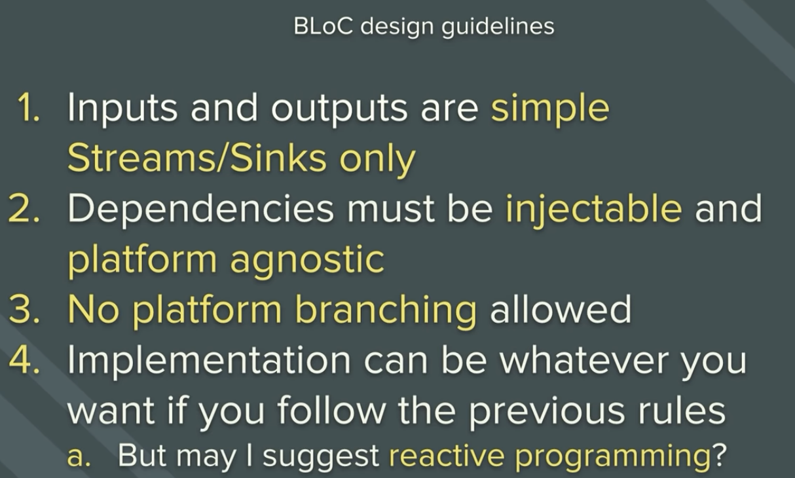 bloc has simple api, injected dependencies, is platform independent, reactive programming recommended.
### [Bloc rules, 2/3 (2018)](https://youtu.be/PLHln7wHgPE?t=1377) 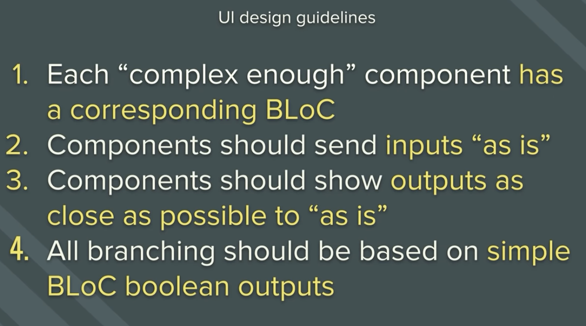 features map to bloc (1:1), input (event) and output (state) defined by bloc, states are unambiguous.
### [Bloc rules, 3/3 (2018)](https://youtu.be/PLHln7wHgPE?t=1377) 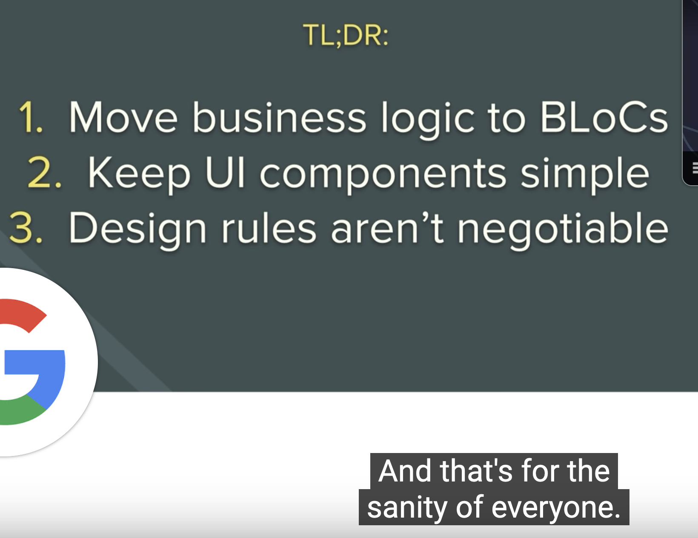 bloc = logic, ui = interaction. Simple & Separated. 1:1. No exceptions! ".. for the sanity of everyone."
### [Reactive Flutter Bloc, 1/1 (2018)](https://www.youtube.com/watch?v=RS36gBEp8OI) 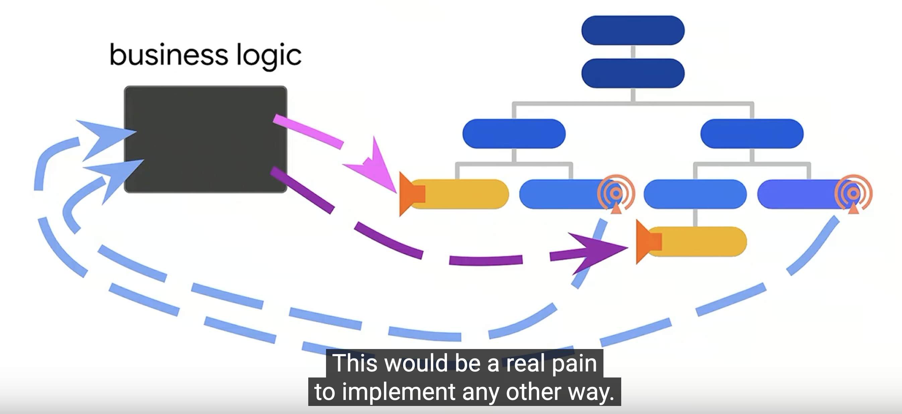 Bloc is saved at widget tree. Any widget under bloc at widget tree can interact with bloc and send events. Builder methods build part of widget tree when new state is emitted.
#### [Most important classes]() Creation - BlocProvider creates bloc Business Logic - Bloc is base class for custom blocs State change operations - BlocBuilder builds widget tree - BlocListener runs functions
#### [Additional classes]() Creation - MultiBlocProvider to create multiple blocs Business Logic - BlocBase is base class for Bloc and Cubit - Cubit is like Bloc, but has methods instead of events State change operations - BlocSelector selects part of state - BlocConsumer combines builder and listener
## Imaginary example flow [Pictures taken from this article](https://timothystepro.medium.com/visualizing-flutter-bloc-399d79701f3a)
#### [Creating bloc](https://gist.github.com/felangel/fc8230776591f0297e6a1d1b5ef46a6c) <img alt="bloc provider" src="images/widget-tree-1-bloc-provider.png" width="40%"> Bloc provider widget creates bloc eagerly or lazily. Widgets in enclosed context can find and use bloc.
#### [User interacts with bloc](https://gist.github.com/felangel/fc8230776591f0297e6a1d1b5ef46a6c) 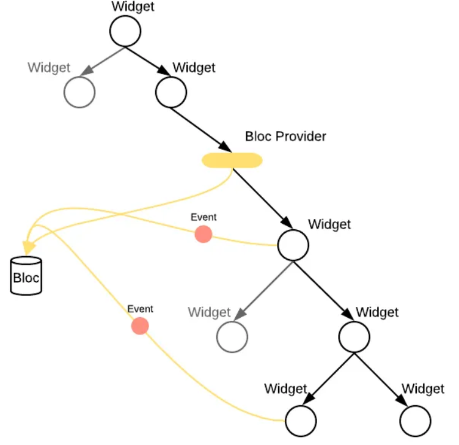 Widgets send events to bloc. Example: "LoginRequested" with username and password.
#### [Receiving events from apis](https://gist.github.com/felangel/fc8230776591f0297e6a1d1b5ef46a6c) <img alt="bloc events" src="images/widget-tree-3-api-results.png" width="50%"> Event is created based on received data. Example: successful login as "CredentialsAccepted".
#### [Building ui](https://gist.github.com/felangel/fc8230776591f0297e6a1d1b5ef46a6c) 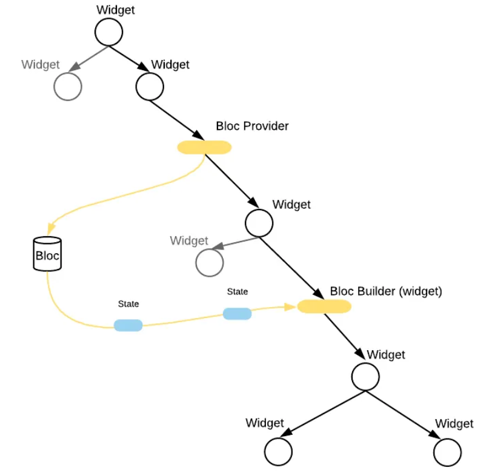 Ui is built when bloc emits new state. Example: "AuthenticationSuccess" with user information.
#### [Building needed part of tree](https://gist.github.com/felangel/fc8230776591f0297e6a1d1b5ef46a6c) <img alt="bloc events" src="images/widget-tree-5-bloc-builder-success-failure-states.png" width="70%"> State object type or content of state object (eg. status enum or other information) influences how UI is built. Example: Success or Failure trees are rendered differently.
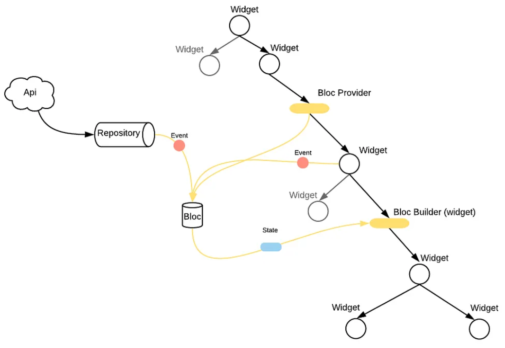 Summary of example: Bloc is created in initial state. Ui is built. Event with required information is sent. Api is called and as result additional event is created. Event handler emits state. State is used to rebuild ui.
## Example application with tests [Code taken from bloc counter app](https://bloclibrary.dev/tutorials/flutter-counter/)
#### [Example: Counter app](https://gist.github.com/felangel/fc8230776591f0297e6a1d1b5ef46a6c) 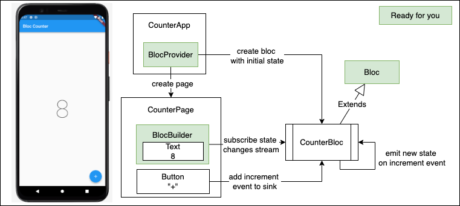 "+" adds increment event to sink, counter is rendered when state is received from stream. [BlocProvider](https://pub.dev/documentation/flutter_bloc/latest/flutter_bloc/BlocProvider-class.html) controls bloc lifecycle, [BlocBuilder](https://pub.dev/documentation/flutter_bloc/latest/flutter_bloc/BlocBuilder-class.html) builds view.
#### [Example: CounterApp](https://gist.github.com/felangel/fc8230776591f0297e6a1d1b5ef46a6c) ``` class CounterApp extends StatelessWidget { @override Widget build(BuildContext context) { return MaterialApp( home: BlocProvider( /// DI: always same bloc instance create: (_) => CounterBloc(), child: CounterPage(), ), );}} void main() => runApp(CounterApp()); // Creation of app ``` [BlocProvider](https://pub.dev/documentation/flutter_bloc/latest/flutter_bloc/BlocProvider-class.html) takes care of creating single instance of [Bloc](https://pub.dev/documentation/bloc/latest/bloc/Bloc-class.html), lazily by default. Usage of [BlocProvider](https://pub.dev/documentation/flutter_bloc/latest/flutter_bloc/BlocProvider-class.html) loosely relates to Dependency Injection as concept.
#### [Example: CounterPage](https://gist.github.com/felangel/fc8230776591f0297e6a1d1b5ef46a6c) ``` class CounterPage extends StatelessWidget { @override Widget build(BuildContext context) { return Scaffold( appBar: AppBar(title: const Text('Bloc Counter')), body: Center( child: BlocBuilder<CounterBloc, int>( builder: (context, count) { return Text('$count', style: Theme.of(context).textTheme.headline1); },), ), floatingActionButton: FloatingActionButton( child: const Icon(Icons.add), onPressed:()=>context.read<CounterBloc>().add(Increment()), ),);}} ``` [BlocBuilder](https://pub.dev/documentation/flutter_bloc/latest/flutter_bloc/BlocBuilder-class.html) builds UI. Context.read < CounterBloc > acquires bloc. [add](https://pub.dev/documentation/bloc/latest/bloc/Bloc/add.html) method sends events.
#### Example: Widget Test ``` void main() { testWidgets('Counter++ test', (WidgetTester tester) async { await tester.pumpWidget(CounterApp()); // build, trigger frame expect(find.text('0'), findsOneWidget); expect(find.text('1'), findsNothing); await tester.tap(find.byIcon(Icons.add)); // tap '+' await tester.pump(); // trigger a frame expect(find.text('0'), findsNothing); expect(find.text('1'), findsOneWidget); }); } ``` [widget testing](https://docs.flutter.dev/cookbook/testing/widget/introduction) allows initiating actions and testing ui components state changes frame by frame.
#### [Example: CounterBloc](https://gist.github.com/felangel/fc8230776591f0297e6a1d1b5ef46a6c) ``` /// Base event and Increment Event abstract class CounterEvent {} class Increment extends CounterEvent {} /// handles converting `CounterEvent`s into `int`s. class CounterBloc extends Bloc<CounterEvent, int> { /// The initial state of the `CounterBloc` is 0. CounterBloc() : super(0) { /// When `Increment` event is added, /// current `state` is accessed via the `state` property /// and a new state is emitted via `emit`. on<Increment>((event, emit) => emit(state + 1)); } } ``` Blocs super constructor sets initial state. [on < event > () registers event handler.](https://verygood.ventures/blog/how-to-use-bloc-with-streams-and-concurrency) "Increment" event handler is lambda, which emits new state.
#### [Example: CounterBlocTest](https://gist.github.com/felangel/fc8230776591f0297e6a1d1b5ef46a6c) ``` void main() { group('CounterBloc', () { test('initial state is 0', () { expect(CounterBloc().state, 0); }); blocTest<CounterBloc, int>( 'emits [1] when increment is called', build: CounterBloc.new, act: (bloc) => bloc.add(Increment()), expect: () => [1], ); }); } ``` [bloc_test](https://pub.dev/packages/bloc_test) allows testing reactive code in isolation. Mocking, setup, delays, etc. are supported.
### Why immutability? “Immutable objects are simple. They can only be in one state, which is carefully controlled by the constructor. One of the most difficult elements of program design is reasoning about the possible states of complex objects. Reasoning about the state of immutable objects, on the other hand, is trivial." ― Brian Goetz, Java Concurrency in Practice
### Immutable value types in dart Dart does not have value types, but you can write your own data classes. - define a constructor + the properties - override toString, operator ==, hashCode - implement a copyWith method to clone the object - implement handling of json de/serialization It's possible, but tedious and error prone.
### [Freezed: motivation](https://pub.dev/packages/freezed#motivation) 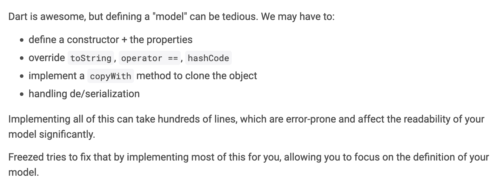 Missing language level value types is a problem, but generating code from annotations is a powerful fix.
### [Model: User](https://codewithandrea.com/articles/parse-json-dart-codegen-freezed/) ``` @freezed abstract class User with _$User { const factory User({ required String id, required String username, required String password, }) = _User; // json serialization factory User.fromJson(Map<String, dynamic> json) => _$UserFromJson(json); } ``` [@freezed](https://pub.dev/packages/freezed) annotation makes [Build runner](https://pub.dev/packages/build_runner) to generate _$User mixin, _User constructor and _$UserFromJson method for [json handling](https://pub.dev/packages/json_serializable). Generated code is saved to repository, as generation takes some time.
### [Events: authentication](https://bloclibrary.dev/naming-conventions/#event-conventions) ``` @freezed abstract class AuthenticationEvent with _$AuthenticationEvent { const factory AuthenticationEvent.loginRequested( String username, String password, ) = Login; const factory AuthenticationEvent.logoutRequested() = Logout; } ``` Bloc will have own handlers for both Login and Logout events. Login has required parameters, which are passed to bloc. Event names should be in past tense, ie. LoginRequested, LogoutRequested.
### [State: Class per State style](https://bloclibrary.dev/modeling-state/#sealed-class-and-subclasses) ``` @freezed abstract class AuthenticationState with _$AuthenticationState { const factory AuthenticationState.authenticated(User user) = Authenticated; const factory AuthenticationState.unauthenticated() = Unauthenticated; } ``` Bloc creates state. Bloc listeners and bloc builders react on state change. Each state has own class. State contains only needed attributes. Type safe, easy to use, but can become verbose and complex.
### [State: Single class style](https://bloclibrary.dev/modeling-state/#concrete-class-and-status-enum) ``` enum GameStatus { initial, playing, success, failure } @freezed abstract class GameState with _$GameState { const factory GameState({ @Default(GameStatus.initial) status, @Default(5) int boardSize, @Default({}) Set<int> selectedElements, @Default([]) List<String> gameElements, }) = _GameState; factory GameState.fromJson(Map<String, Object?> json) => _$GameStateFromJson(json); } ``` User interface tracks status field of state class. Easy to model. Not type safe. Results easily bloated class with conflicting attributes, for example error information is useful only in failure state.
#### [State modeling / usecases](https://www.youtube.com/watch?v=JVRPIittNaE) 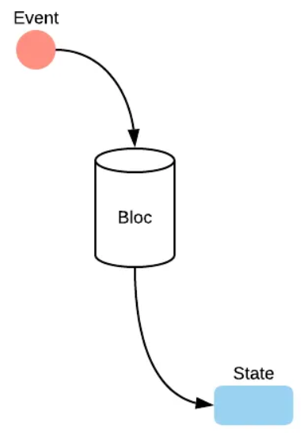 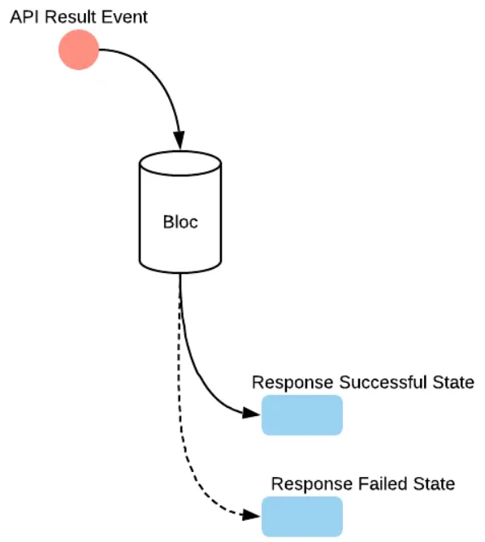 State modeling style depends on use case. One should use both styles in same app where appropriate.
### [Modularity: principles]() - Code is on monorepo - Monorepo may contain multiple apps - Each app has set of features - Features are on their own modules - Modules export their public classes - Modules are is kept in sync using task runner - Task runner runs same commands in each module
### [Structure: monorepo](https://melos.invertase.dev/getting-started) ``` my_project ├── apps │ ├── apps_1 │ └── apps_2 ├── packages │ ├── package_1 │ └── package_2 ├── pubspec.yaml └── README.md ``` All code is on single repository. Apps are under */apps* directory. App is composition of features. Each feature has own package under */packages*.
### [Structure: app](https://melos.invertase.dev/getting-started) ``` app ├── lib │ ├── app │ │ ├── config │ │ └── view │ │ └── app.dart │ ├── app_bloc_observer.dart (log bloc activity, only dev) │ ├── bootstrap.dart │ ├── main_development.dart (enty point, dev) │ ├── main_production.dart (enty point, prod) │ └── main_staging.dart (enty point, staging) ├── pubspec.yaml ├── test └── windows (embedder / target) ``` Dev, Prod and Staging entry points bootstrap app.dart with right configuration. Config directory contains navigation routes and other configuration.
### [Structure: feature](https://melos.invertase.dev/getting-started) ``` features ├── authentication . ├── lib . │ ├── authentication.dart (public api) │ └── src │ ├── bloc │ ├── view │ └── .. └── test ├── bloc ├── view └── .. ``` Features public api is directly under lib. lib/src includes private implementation of feature. Blocs and views are implemented and tested separately.
## Result: Safe programming Programs are safer if we prevent hardcoded dependencies, shared mutable state, side effects, nulls and mixed responsibilities and instead use dependency injection, immutable objects, pure functions, null safety and single responsibility principle.
#### [Value of App Architecture](https://www.youtube.com/watch?v=JVRPIittNaE) 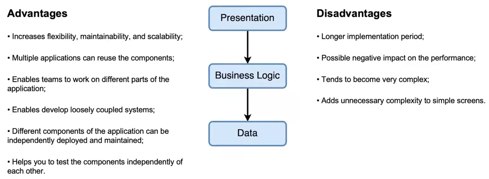 Every system has architecture, planned or accidental, planned being mostly preferable. Pros & Cons depend on stakeholder, personal preferences, project & phase. Architectural decisions should be recorded.
## Flutter Recap - [React](https://reactjs.org/)/[ReactNative](https://reactnative.dev/) have similarities to Flutter - Flutter UI is [reactive](https://docs.flutter.dev/resources/inside-flutter) and [declarative](https://docs.flutter.dev/get-started/flutter-for/declarative) - [UI's are composed](https://docs.flutter.dev/development/ui/layout) - [widgets](https://docs.flutter.dev/development/ui/widgets-intro) everywhere! - Dart is [typed](https://dart.dev/guides/language/type-system), [null safe](https://dart.dev/null-safety), [top 20](https://redmonk.com/sogrady/2022/10/20/language-rankings-6-22/) language - Dart enables [hot reload](https://docs.flutter.dev/development/tools/hot-reload), [JIT](https://dart.dev/tools/dart-compile) and [AOT](https://dart.dev/tools/dart-compile) - Usage of [native / foreign code](https://docs.flutter.dev/development/platform-integration/platform-channels) is supported - Architecture != State Management, you need both - [Bloc](https://bloclibrary.dev/#/) is popular [state management option](https://docs.flutter.dev/development/data-and-backend/state-mgmt/options) - Bloc works as [VM](https://developer.android.com/topic/libraries/architecture/viewmodel) at [Model-View-ViewModel](https://en.wikipedia.org/wiki/Model%E2%80%93view%E2%80%93viewmodel) - Bloc requires knowledge of reactive programming.
#### [Volatility-based decomposition](https://www.informit.com/articles/article.aspx?p=2995357&seqNum=2) identify and encapsulates areas of potential change. implement behavior as interaction between encapsulated areas. at app we can use features as one organizing principle - but how to identify and name them? - and should they be coarse or fine granular? goal => high [cohesion](https://en.wikipedia.org/wiki/Cohesion_(computer_science)), low [coupling](https://en.wikipedia.org/wiki/Coupling_(computer_programming)#Semantic_coupling), ..
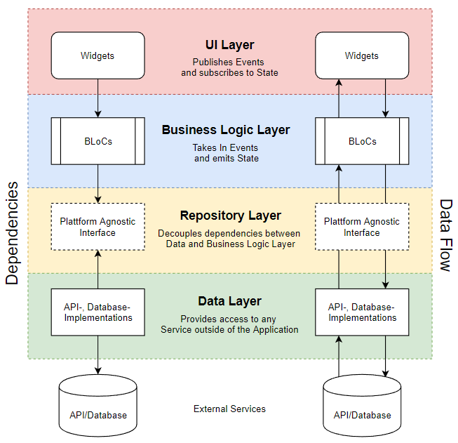 [layers](https://github.com/devonfw-forge/devon4flutter-non-bloc-arch/wiki/220-BLoC)
#### [Example of organizing principles](https://verygood.ventures/blog/very-good-flutter-architecture) app as composition of features - app contains navigation, dependency injection, .. packages for features, domain and data - features match to functional requirements - found from software design and named clearly - features contain views and blocs - domain layer consists of repositories and models - repositories transform raw data to domain model - data layer consists of reusable clients
#### Simple over Complex Recap - harden code using strong typing - shorten feedback loops using small tests - use one-way flows to help reason code - only support immutable data at ui - render changes same way as initial values - use simple components - write code only when absolutely necessary - organize code to minimize ripple effect - use uniform programming model in whole app
#### History / Presentations - [React: rethinking best practices, 10/2013](https://www.youtube.com/watch?v=x7cQ3mrcKaYx) - [Flux: Rethinking Web App Development, 5/2014](https://www.youtube.com/watch?v=nYkdrAPrdcw&list=PLb0IAmt7-GS188xDYE-u1ShQmFFGbrk0v) - [Open the Sky, 23.10.2014](https://github.com/flutter/flutter/commit/00882d626a478a3ce391b736234a768b762c853a) - [Sky Demo, 4/2015](https://www.youtube.com/watch?v=PnIWl33YMwA) - [The Mahogany Staircase - (..) Layered Design, 3/2016](https://www.youtube.com/watch?v=dkyY9WCGMi0) - [Flutter's Rendering Pipeline, 5/2016](https://www.youtube.com/watch?v=UUfXWzp0-DU) - [Flutter: Dart Developer Summit 2016, 10/2016](https://www.youtube.com/watch?v=Mx-AllVZ1VY) - [Flutter: (..) UI framework for tomorrow (..), 9/2017](https://www.youtube.com/watch?v=VUiVkDpikDI) - [Flutter: The Best Way to Build for Mobile?, 10/2017](https://www.youtube.com/watch?v=1BXg4wfB9pA) - [Early Success Story, 2018](https://medium.com/kinandcartacreated/flutter-the-skys-the-limit-84887c8f650d)
## More - [State of Flutter & Dart](https://redmonk.com/jgovernor/2022/05/16/flutter-propels-dart-frameworks-language-adoption-and-cross-platform-development/) - [Flutter & Ubuntu](https://ubuntu.com/blog/flutter-and-ubuntu-so-far) - [Awesome Flutter](https://github.com/Solido/awesome-flutter) - [Riverpod and Bloc comparison](https://otakoyi.software/blog/riverpod-and-bloc-packages-comparison) - [Crossing the chasm](https://www.hightechstrategies.com/crossing-the-chasm-summary/)
## Examples - [wisgen, 2019, no null safety used](https://github.com/Fasust/wisgen) - [i/o Pinball, 2022](https://verygood.ventures/success-stories/i-o-pinball) - [ranch game, 2022](https://verygood.ventures/blog/very-good-ranch-game)
#### ["Architecture is about the important stuff. Whatever that is." - Ralph Johnson](https://martinfowler.com/architecture/) - Within the Flutter community, [State Management](https://docs.flutter.dev/development/data-and-backend/state-mgmt/intro) and [Architecture](https://martinfowler.com/architecture/) are often used synonymously - [Any architecture for a Flutter application](https://github.com/devonfw-forge/devon4flutter-non-bloc-arch/wiki/200-Architecting-a-Flutter-App#state-management-vs-architecture) will have [some sort of State Management](https://docs.flutter.dev/development/data-and-backend/state-mgmt/options) - [State Management](https://docs.flutter.dev/development/data-and-backend/state-mgmt/intro) is not an [architecture by itself](https://bloclibrary.dev/#/architecture), even if [bloc library](https://bloclibrary.dev/) documentation contains [architecture proposition]((https://bloclibrary.dev/#/architecture)). - Compare: [Redux](https://redux.js.org/), Reacts state management solution